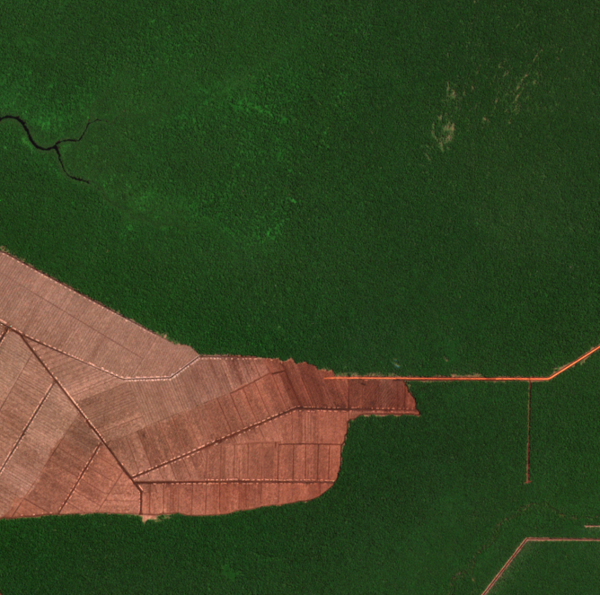
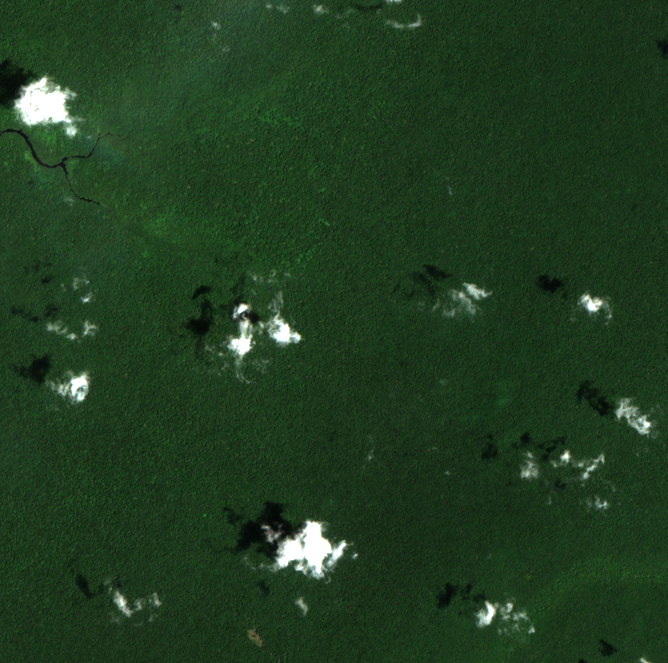

Draw the box
The supplier names the land. The reviewer draws that rectangle, and nothing outside it is scored.
EU deforestation regulation · 30 Dec 2026
Forest through 2021. Cleared in 2023. Drag the scene. Large operators file under the EU rule on 30 December 2026.


The supplier names the land. The reviewer draws that rectangle, and nothing outside it is scored.
2020 through the latest clear scene, one frame at a time.
Forest in 2020, trees lost after, and a second opinion on whether the loss looks planted.
A check can show post-2020 tree-cover loss consistent with plantation conversion. It is not a compliance finding.